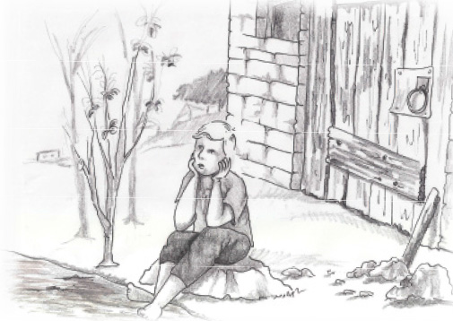

A Dreidel on the Thai Beach
Gai was taken aback. A dreidel on the Thai beach? How could that be? There wasn’t a single Jew in the entire area! Gai turned the dreidel this way and that and even played with it. It turned and turned and landed and Gai felt surprisingly emotional about it. He was overcome by childhood memories. He remembered how his father lit the Chanuka Menorah. His mother made warm, tasty doughnuts and they all sat and sang “HaNeiros Hallelu.”

Gai adjusted the large backpack on his shoulders and said goodbye to his parents, brothers, and sisters who had come to see him off at the airport. His parents looked very worried and his siblings did not look too happy either.
“Don’t worry, it will be okay … I’ll call. It’s not the end of the world,” he said.
Gai had recently finished his army service and now, like many young Israelis, he wanted to make a trip around the world, alone. For how long? He didn’t know. He had bought a one-way ticket and had no plan and was under no obligation to anyone. When he felt like returning, he would return.
Gai landed in the Far East which is very dissimilar to Eretz Yisroel. He felt as though he had gone a hundred years back in time. There were entire areas that were undeveloped, laundry was done by hand, people lit oil lamps to see at night …
He was very impressed by the stunning scenery. He sought the most unusual sights, climbed mountains, hiked for hours, and gazed at the scenery, alone, with his pack on his back.
Gai spent three years traveling in the Far East, far from his home and friends, far from Torah and mitzvos.
One day, when he was in Thailand, he found an out-of-the way place by the name of Ko Pha Ngan, an isolated island in the sea. Gai loved it. He lived there alone for three months in a hut that he rented from a Thai woman. Every day he sat on the beach and listened to the murmuring of the waves. He looked out to the horizon which was all water and watched the waves breaking on the rocks.
These were quiet times when Gai thought and thought. He contemplated the incredible natural world and remembered all kinds of spiritual teachings he had learned from non-Jews. Sadly, he did not think about Hashem, Torah, and mitzvos.
Gai was very far from Jewish knowledge and practice. He kept away from anything that seemed connected to Judaism. Back home he had heard many lies about religious Jews and about Judaism and this is why he kept his distance from anything that reminded him that he was a Jew. On this long trip he disconnected even more from his Judaism. Although he had promised to call home, he only called a few times during those three years. The last time he had called was five months earlier!
Gai prepared to do more spiritual exercises he had learned. He focused his thoughts, took a deep breath, and filled his lungs with the clean air. The sky had already started turning colors and the sun was in the west when suddenly, something washed up on the shore right near where he was sitting.
It was a little thing that sparkled so Gai picked it up. He couldn’t believe it – it was a dreidel! A Chanuka dreidel! And not just any dreidel. It had four Hebrew words on it: Nes, Gadol, Haya, Po (A Great Miracle Happened Here).
Gai was taken aback. A dreidel on the Thai beach? How could that be? There wasn’t a single Jew in the entire area! Gai turned the dreidel this way and that and even played with it. It turned and turned and landed and Gai felt surprisingly emotional about it. He was overcome by childhood memories. He remembered how his father lit the Chanuka Menorah. His mother made warm, tasty doughnuts and they all sat and sang “HaNeiros Hallelu.”
Gai felt overcome by homesickness and he went back to the small building he rented and immediately looked for his phone to call home.
The ringing at his parents’ home sounded as it always did but when his mother heard who was on the line, she nearly fainted.
“Gai! How are you? I’ve missed you so much! Why haven’t you called until now? I’ve been so worried about you. What’s going on with you? Where are you?”
Gai was also happy to hear his mother’s loving voice. “Ima, everything is fine. I’m here, in a small house. The scenery is magnificent with the beach and ocean.”
“It’s good you called Gai. Abba is about to light the Menorah. You can listen too.”
Gai felt dizzy. Chanuka? A dreidel? Unbelievable!
“It’s Chanuka today?” he managed to croak. He listened to the Menorah lighting while tears fell from his eyes and he tightly clutched the dreidel that had been sent to him that day from heaven.
The signs he had gotten that day were so clear that he couldn’t ignore them.
When he finished the conversation with his mother he went back to the beach and looked for material in order to build a Menorah. He found a banana leaf and a coconut and he made an improvised Menorah with eight branches. When he finished constructing his Menorah, he put in candles that he had gotten from the woman who rented him the room.
As he lit the candles, the spark in his heart burst into a blaze.
Near Gai, on the beach, sat another person who was also looking at the scenery. He glanced at Gai and looked at astonishment at his Menorah. When Gai finished what he was doing, the other person went over to him and asked, “What are you doing? Why are you lighting candles in such an unconventional way? And what are you pondering so deeply?”
Gai recalled the Chanuka story he had learned in preschool and said, “It’s a Jewish holiday, a holiday of victory.”
“Victory over who?” asked the man.
“The victory of the Jews over the Greeks,” said Gai.
“Hmm, I’m Greek. I was born in Greece.”
Gai did not need any more signs. The very next day he took his backpack and went to the Chabad house. He had decided to learn about Judaism, to get to know what he was truly about.
A few months later he returned home and went to the Chabad yeshiva in Katamon in Yerushalayim. He became a baal t’shuva and a devoted Chassid of the Rebbe. He married and his Chassidishe home is now a nachas to the Rebbe MH”M.
Beis Moshiach (staff). "A Dreidel on the Thai Beach." Beis Moshiach, no. 904 (November 26, 2013).